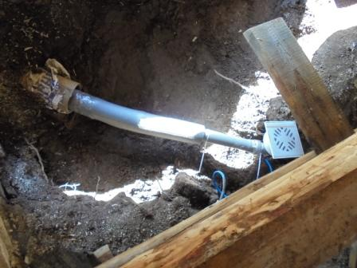
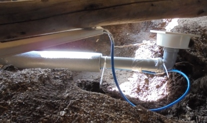

- Главная
- Cруб
- Выпиливание входной двери
- Двери
- Монтаж слива парной
- Основание первого уровня пола
- Обрешётка первого уровня пола
- Тепло и гидроизоляция в парной
- Основной пол в парной
- Окно в предбаннике
 Установка слива парной.
Установка слива парной.
Установка слива парной.
Установка слива парной.

С самого начала строительства стояла задача. Совместить баню и жилое помещение в виде предбанника. Значит баня должна хорошо проветриваться. Вода не должна скапливатся.
Уже при заливке фундамента была положена сливная труба из асбестоцемента. В неё поместили 50мм пластиковую канализационную трубу в утеплителе. С целью предотвращения замерзания воды зимой, между трубой и утеплителем проложил нагревательный кабель.
Кабель приобрёл заводской с датчиком температуры на конце и вилкой, выходящёй в предбанник под полом.
Пол настилался в два уровня.